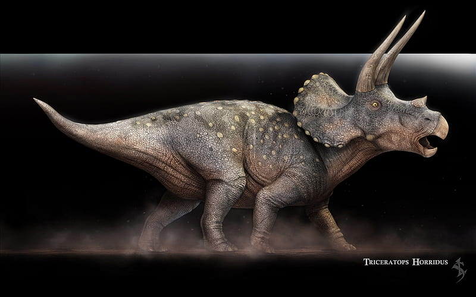

Triceratops

El Triceratops fue uno de los dinosaurios herbívoros más emblemáticos del período Cretácico tardío,
habitando extensas llanuras y bosques de lo que hoy es América del Norte.
Su historia evolutiva se caracteriza por la adaptación a entornos con grandes depredadores,
lo que lo llevó a desarrollar un imponente cráneo con tres cuernos y un amplio volante óseo para defensa y exhibición.
Entre sus principales habilidades destacaban su gran fuerza corporal,
su resistencia y su capacidad para embestir a posibles amenazas, utilizando sus cuernos como armas defensivas.
Además, su potente mandíbula le permitía alimentarse de vegetación dura,
asegurando su supervivencia en ecosistemas altamente competitivos.
T-rex

El Tyrannosaurus rex fue uno de los depredadores más temidos del período Cretácico tardío,
dominando vastos territorios de lo que hoy es América del Norte.
A lo largo de su historia evolutiva desarrolló un cuerpo robusto,
una enorme cabeza y una de las mordidas más poderosas conocidas entre los animales terrestres.
Sus principales habilidades incluían una fuerza mandibular capaz de triturar huesos,
una visión binocular que le permitía calcular con precisión la distancia a sus presas y
un olfato altamente desarrollado para detectar alimento a grandes distancias. A pesar de sus pequeños brazos,
su potente estructura corporal y su velocidad lo convertían en un cazador eficiente y en el máximo depredador de su ecosistema